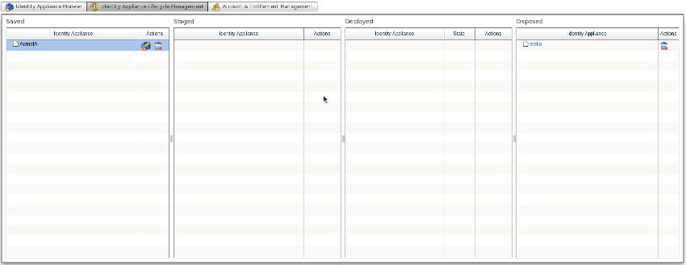

This is the first identity and access management product that employs a model-driven approach to visually specify and execute identity architectures. Even those of you who are not familiar with this approach - commonly referred as MDD (Model Driven Development) - may have actually been using tools based on this paradigm for more than a decade. For instance, Database Administrators use this approach to specify and set up database schemas; those of you involved in software engineering use diagramming tools to specify application designs and, eventually, to scaffold the code. There are many examples of MDD implementations out there, and almost every technical domain employs at least one of these tools to shorten learning curves and improve productivity. But we couldn't find one that addressed the inherent (and ever-increasing) complexity of the identity and access management space. At Atricore we felt that one was needed; so we built one. Then we delivered it, for free, with JOSSO2. Here's where the Atricore Console comes in. You can model an identity architecture and transform it into something that executes, without necessarily being exposed to the myriad technical details surrounding the process. Because of the strong JOSSO binding, in addition to enabling the services to realize your identity architecture, you can activate your target execution environments so that they'll be provisioned with the building blocks you need to deal with your setting in an out-of-the-box fashion. When we tested the first bits of the Atricore Console we were amazed at how much we were able to achieve with so little. We delivered a simple Federated SSO deployment in just fifteen minutes! TBD: Atricore Console Highlights
Simply put, Model-Driven Identity (MDid) is the result of crossing model-driven development with identity and access management domains. To understand what MDId really is, you need to know one more thing: what, in this context, do we mean by a "model"? If you're familiar with Unified Modeling Language (UML), you might imagine a higher-level description of an application from which we can generate some (or all) of the implementation. In that case, you'd be right about what a "model" is, but not exactly about MDId's spin on it. Although the idea is the same, a model in MDId is less general and high-level than the commonly accepted interpretation. MDId doesn't require a completely different methodology, or any sophisticated modeling tools. All you need to get started with MDId is the Atricore Console, which is bundled in JOSSO2. As you'll see in the following sections, MDId relates the modeling concepts portion of the identity and access management domain directly to their implementations, thereby bringing to JOSSO - and to Identity Architects in general - the benefits of modeling, with a low cost of entry.
In a nutshell, Atricore Console is an Integrated Development Environment (IDE) that is used to describe a model of an identity architecture, and then to generate the artifacts which bring that architecture to life. With Atricore Console, both modeling and implementing IAM (Identity Access Management) architecture can be considered as one and the same action. Instead of forcing a separation of the high-level engineering and modeling work from the low-level implementation activities, Atricore Console brings them together as two well- integrated parts of the same task. Why is modeling interesting for an IAM project in the first place? For starters, it gives you the ability to describe what your identity and access management solution is supposed to do (presumably) more easily than with dealing with configuration descriptors and code. In turn, this gives you a solid, high-level way to both communicate the identity architecture and to generate part, if not all, of the implementation artifacts.
MDD addresses full life cycle application development, data, and application integration standards that work with multiple middleware languages and interchange formats. MDD unifies some of the industry's best practices in software architecture, modeling, metadata management and software transformation technologies; practices that allow the user to develop a modeling specification just once, then target multiple technology implementations by using precise transformations and mappings. Atricore Console supports the key MDD concept of using models as input for development and integration tools. In Atricore Console, a model is used to drive the generation of identity and access management implementations.
Identity and Access Management projects require different roles in order to increase the chances for success. The fundamental roles are these: a Project Manager to keep track of the overall implementation; a Solution Architect capable of putting together solution blueprints; a System Integrator to ensure that all the identity architecture pieces of the solution play together nicely in both sandbox and production settings and a System Developer to introduce the customization required to make the underlying identity suite match finer-grained usage scenarios as required by the business.
It's a sad fact that most identity and access management projects fail. The blame for this high failure rate can be shared by multiple areas for a myriad of reasons. Covering all of them lies beyond the scope of this document, but we're happy to take aim at one: the gap that exists between the roles of Solution Architect and System Integrator. The Solution Architect builds on different pieces of information to come up with a solution. These range from identity management use-case specifications to user stories, from quality attributes required for the technical architecture to resource availability and the capabilities available in the underlying product-and the list goes on. The outcome of the solution-building process is usually a set of artifacts - mainly technical documents - which contain the detailed descriptions and supporting diagrams of the identity management architecture. Let's say that these documents are 10,000', bird's-eye views of the solution. These are then passed on to the System Integrator in order to bring the proposed solution to life. Now the System Integrator must work up at 10,000'. New aspects related to the implementation tasks introduce significant changes, constraints and detail to the solution. But these valuable pieces of information are not brought back to the original solution blueprints. As the integration iterations flow, the artifacts covering the solution rapidly become stale, leaving the actual implementation as the only source available for parsing the identity and access management solution. Herein lies the problem. Understanding the solution architecture via the actual implementation requires detailed knowledge of the product and internals - which are scattered throughout the entire implementation. Gathering all the pieces together into an updated high-level view is a classic "mission impossible". In the advanced stages of the implementation, the Solution Architect tends to play a passive role, with little control over the project in terms of the identity architecture. The lack of control in this area represents a risk for the overall project, since the end product might not match stakeholder expectations, or scale as planned.
The role of Identity Architect is a relatively new one in the Identity and Access Management market. Responsible for putting the identity architecture together, like a builder/designer for identity and access management architecture, it's a similar role to that of the Solution Architect - but with some notable differences.
We think of an Identity Architect as the result of combining the roles of the Solution Architect and the System Integrator. The Identity Architect works with live architecture models, which act as the pieces that drive the realization of an identity architecture.
With this approach identity architecture blueprints are always up-to-date, since they're in sync with the underlying implementation. A live view of the architecture can be accessed at any time, along with the ability to extend or prototype it (among many other possibilities).
The Identity Appliance Modeler is the principle enabler of these processes, and serves a twofold purpose. It can be used to diagram the identity architecture as well as to realize it onto the target product suite.
While JOSSO1 provides a command line console in order to provision SSO support onto the target environment, users are still required to deal with low-level artifacts - such as XML descriptors - in order to fine tune the implementation. This creates a high entry barrier for less technically-savvy users, due to the learning curve involved with JOSSO and the constructs employed in order to set up the product to realize SSO usage scenarios. In addition, the people responsible for the identity architecture do not have visibility or control of the federated single sign-on setting, so they have to rely on more technically proficient people - usually not SME experts - in order to bring their project to life. Chances for miscommunication increase as a consequence, and that poses a significant risk to the identity and access management project.
With the Identity Appliance Modeler, the Identity Architect gains complete control of the process of mapping the high-level identity architecture to something that will actually execute. Definition of the identity architecture can be accomplished in a purely visual fashion, thus eliminating the high entry barrier that's typically required to engage in the delivery of Internet SSO.
Here's what the Identity Appliance Modeler looks like :
The action bar offers operations related to the identity appliance. These are mainly concerned with managing the workspace within which an identity appliance model is bootstrapped and edited. For instance, an identity appliance can be scaffolded by clicking on the "New" button, or we can continue working on an existing appliance by selecting it and clicking on the "Open" button.
The Palette consists of four drawers. The "Entities" drawer holds the items used to specify the primary agents of the identity architecture, namely the Identity Provider and Service Provider. The "Identity Sources" drawer holds items used to specify the specific storage mechanism which will be leveraged to back authentication and authorization processes. The "Execution Environments" drawer holds items used to specify the application platform upon which service providers can execute. Finally, the "Connections" drawer holds the items used to connect the building blocks of the identity architecture together.
The Diagram Canvas plays the role of placeholder for all of the elements constituting an identity appliance model.
The Appliance Browser, on the left side of the Diagram Canvas, provides a tree view of the identity appliance model. Any change that's made to an identity appliance element is automatically reflected on the tree. Any time an element is selected on the tree, it is also selected on the Diagram Canvas and its details are presented on the property sheet panel.
The property sheet section is at the bottom of the Identity Appliance Modeler screen. It's the entry point for accessing the details of identity appliance elements, and it's where editing actions on those details take place.
In order to add an element to an existing identity appliance model, simply click on one of the items from the Palette and then drag and drop it onto the Diagram Canvas. Connecting two elements is achieved by dragging onto the diagram an item of the required connection type, then selecting the source and target elements you wish to associate together.
You can edit by clicking the element in question from the Diagram Canvas and selecting the field you wish to update within the property sheet section. Element removal is achieved by clicking on the red cross that appears when a rollover action is performed on an element of the diagram.
The Identity Architect is also in control of transforming the identity architecture model into a fully executing artifact. As with the Identity Appliance Modeler, it's a simple point-and-click process. The Identity Appliance Life Cycle Management screen offers a grid-based layout, within which columns are used to represent the different states possible for the identity appliance artifact.

Switching the identity appliance from one state to another is achieved by dragging the identity appliance item from the column representing the source state, and dropping it into the column representing the target state. For instance, in order to build an identity appliance: select and drag the corresponding item from the "Saved" column and drop it into the "Staged" column. Additionally, an identity appliance in the "Deployed" state can be started and stopped with the buttons located to the right of the item. TODO: insert identity appliance lifecycle management screenshot
JOSSO2 is bundled with an out-of-the-box identity store - known as Identity Vault - onto which user accounts and entitlements can be provisioned. Identity Vaults can be bound to both Identity and Service Provider entities. The identity vault is built on an Apache Derby relational database system.
Both accounts and groups can be provisioned. Accounts can also be associated to one or more groups in order to serve as the input for Role-Based Access Control (RBAC).

Clicking on the "Manage Users" button displays the screen through which the complete life cycle of user accounts can be managed: provisioning, detail editing, entitlement association and de-provisioning.
Here's how the Account Management screen is structured : TODO: insert account management screenshot